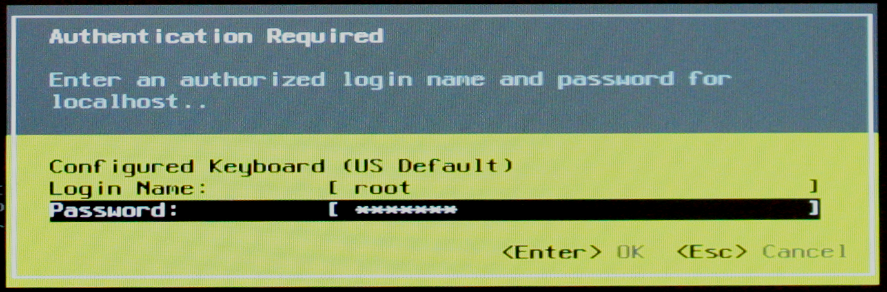
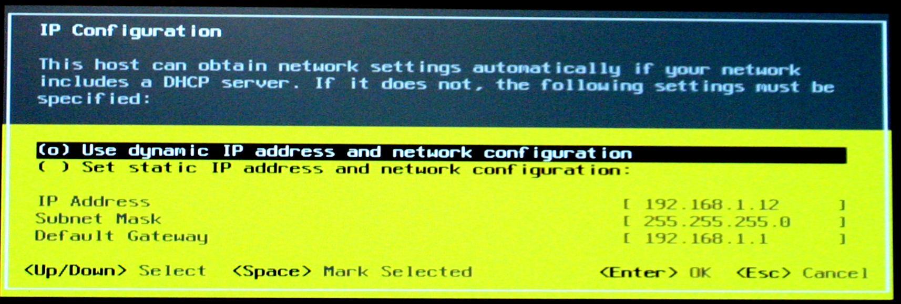
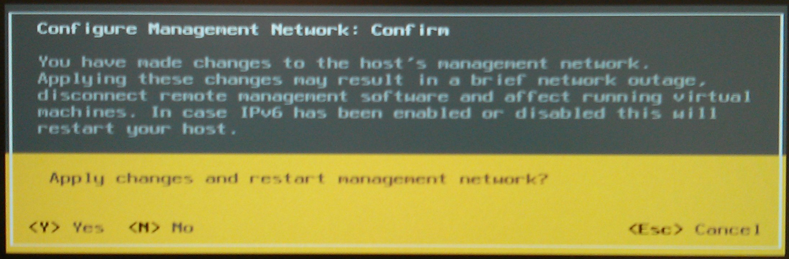

Setting up a Static IP Address for ESXi
From the main ESXi screen, press the F2 key to enter the ESXi settings screen.

Figure 1: ESXi Main Screen
Enter the root password for ESXi and then press enter.

Figure 2: ESXi Password
Use the arrow keys to select Configure Management Network and then press enter.

Figure 3: Configure Management Network
Use the arrow keys to select IP Configuration and then press enter.

Figure 4: IP Configuration
This will pull up the IP Configuration dialogue box. Use the arrow keys to select Set static IP address and network configuration and then press the Space Bar to select the static IP address option. Now enter the IP address, subnet mask, and default gateway information for your network and then press enter.

Figure 5: IP Configuration Dialogue
Press the Escape key a few times to return to the main ESXi screen. If you are presented with a screen similar to Figure 6 asking if you want to restart the management network, click the Y key.

Figure 6: Restart Management Network
After setting up the static IP address, click here to continue installing ISEAGE.